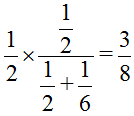

• 一、我在今年11月17日臉書發表：「區段徵收制度之存廢問題」，今年12月11日地方政府三等考試土地政策的第四題：
近年來土地徵收的問題爭議不斷，其中重大的爭議之一為徵收過多或過於浮濫。請問土地徵收的要件為何？試從土地徵收的要件分析區段徵收的存廢。(25分)。
• 二、我在今年9月的新版土地法規(第17版)新增一題實例題(在該書P8-178第160題)：
甲、乙二人共有一筆土地，應有部分各二分之一。嗣甲死亡，應有部分由其子A、B、C三人公同共有繼承登記，應繼分各三分之一。不久，A、B二人未經C之同意，將A、B、C三人公同共有之應有部分出售於丙，其效力為何？何人有優先購買權？
答：(一)共有土地之應有部分為公同共有者，該應有部分之處分，得依土地法第三十四條之一第一項規定辦理。準此，A、B二人未經C之同意，則共有人數過半數及其潛在應有部分(即應繼分)合計過半數之同意，將A、B、C三人公同共有之應有部分出售於丙，其買賣為有效。
• (二) 乙及C均有優先購買權。乙係該地共有人，基於土地法第三十四條之一第四項規定，對出售之應有部分有優先購買權。C係出售應有部分之不同意公同共有人，對出售應有部分全部有優先購買權。二人同時主張時，則按應有部分及潛在應有部分(即應繼分)之比率定之。即乙優先購買八分之三，C優先購買八分之一。乙：[圖片1]C：[圖片2]
今年12月10日地方政府三等考試土地法規的第一題，與上開實例題相仿：
甲與乙兩人分別共有一地，甲之應有部分為四分之三，乙之應有部分為四分之一(下稱系爭土地)，嗣後乙死亡，其應有部分由丙與丁兩人繼承，丙之應繼分為五分之四，丁則為五分之一。……。當丙出賣系爭土地時，倘若甲與丁均行使先買權時，如何處理？試分述之。(25分)
答：丙出賣系爭土地，甲與丁均行使先買權，處理方式如下：甲及丁均有優先購買權。甲係該地共有人，基於土地法第34條之1第4項規定，對出售之應有部分有優先購買權。丁係出售應有部分之不同意公同共有人，對出售應有部分全部有優先購買權。二人同時主張時，則按應有部分及潛在應有部分（即應繼分）之比率定之。即甲優先購買六十四分之十五，丁優先購買六十四分之一。甲：[圖片3]丁：[圖片4]
以上所談的二件事，真的很奇妙！
